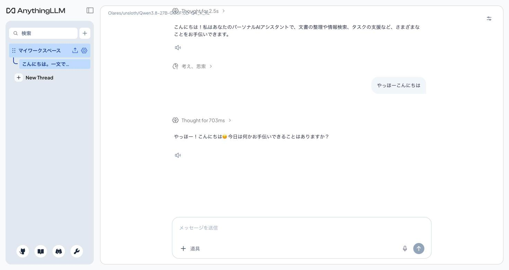
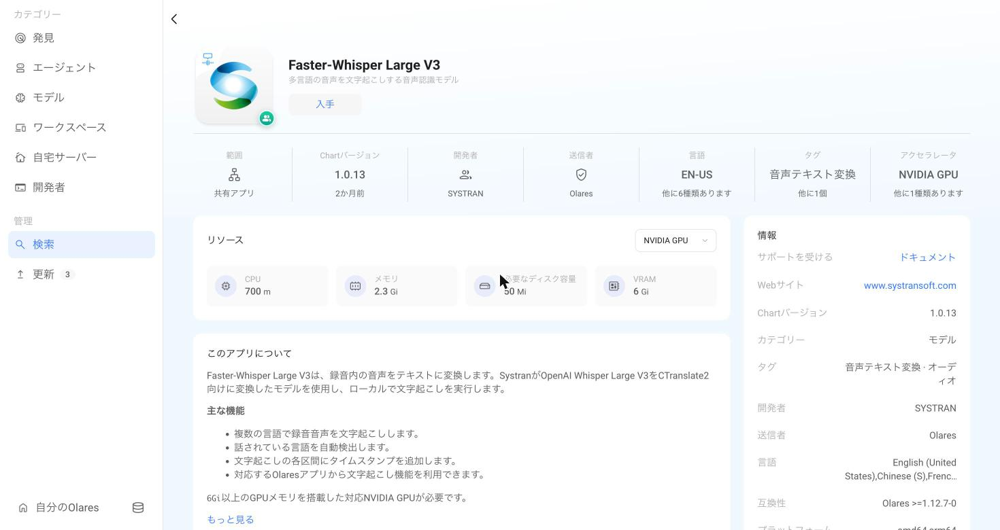
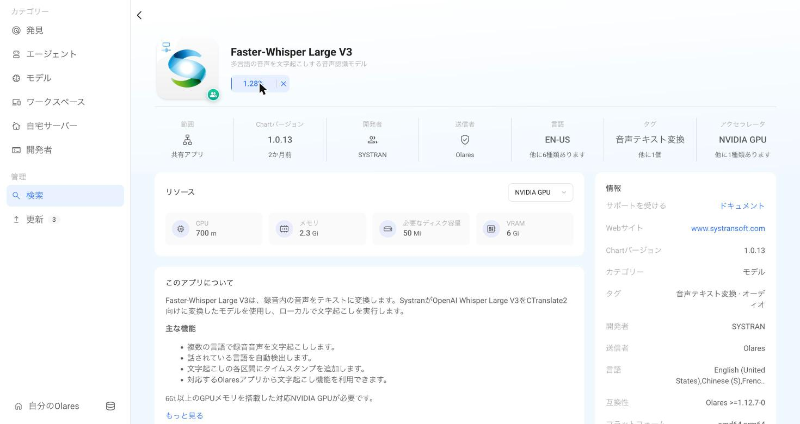
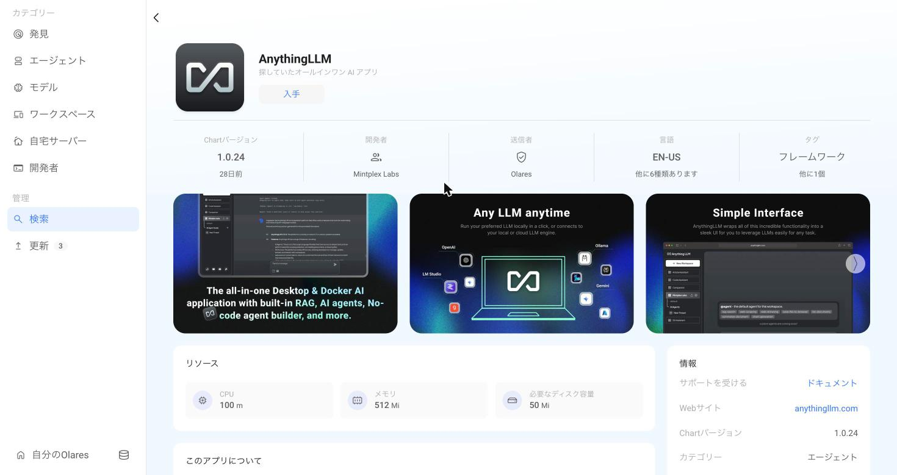
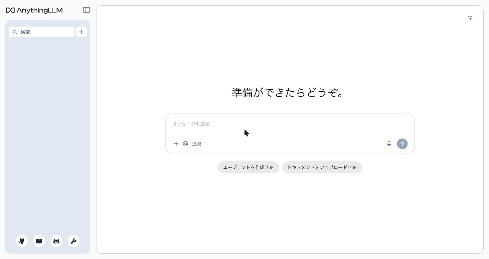
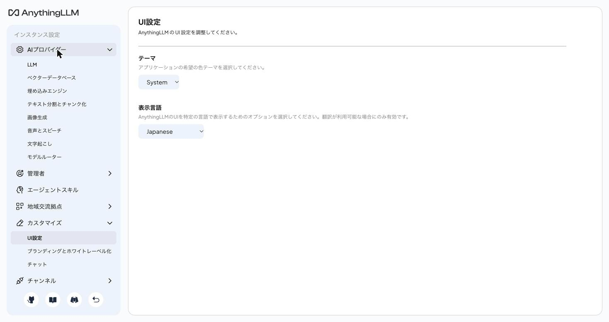
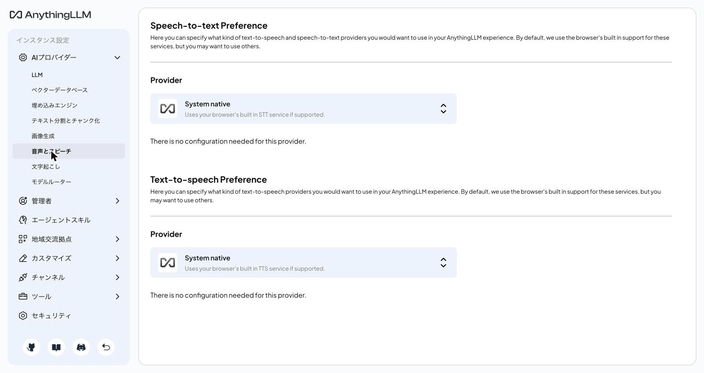
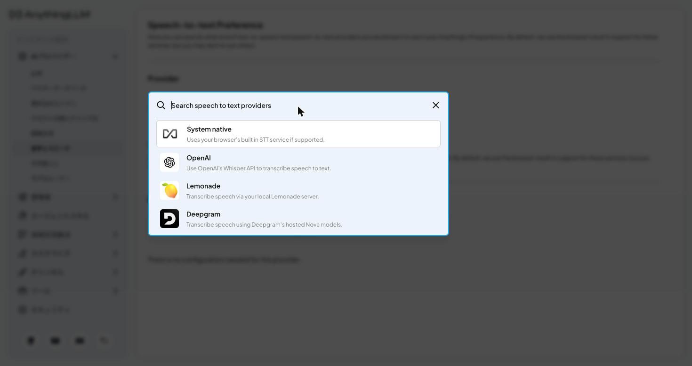
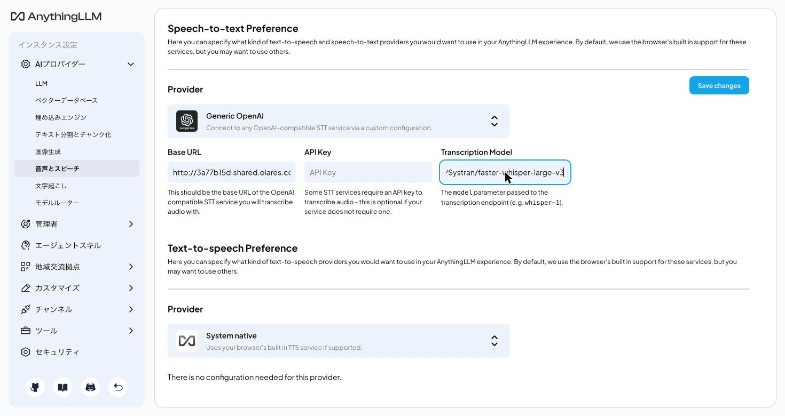
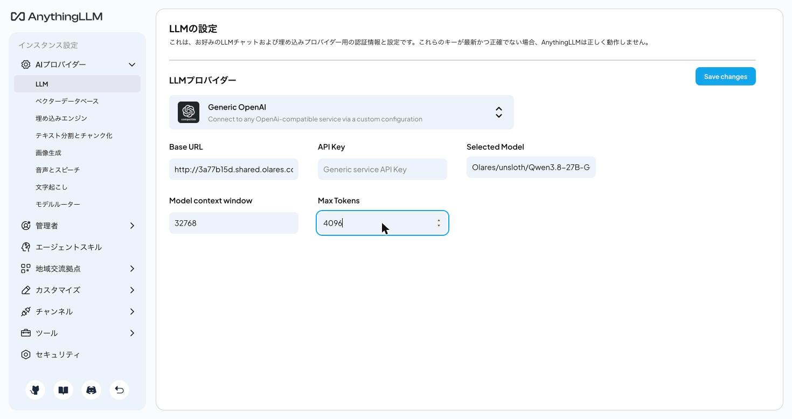

話した声は、Olaresの中で文字になります。外部のサービスには送りません。
| 順番 | 担当 | すること |
|---|---|---|
| 1 | AnythingLLM | ブラウザでマイクの音声を録音し、Olaresに送る |
| 2 | Router（AIゲートウェイ） | 音声を音声認識モデルへ取り次ぐ |
| 3 | Faster-Whisper Large V3 | 音声を文字にする |
| 4 | AnythingLLM | 文字を入力欄に入れる。送信するとチャットモデル（Qwen3.8-27B）が返答する |
| アプリ | 役割 | 入れる人 |
|---|---|---|
| Router | AIゲートウェイ（導入済み） | — |
| Qwen3.8-27B (llama.cpp) | チャットモデル（導入済み） | — |
| Faster-Whisper Large V3 | 音声認識モデル（共有アプリ） | 管理者（2章） |
| AnythingLLM | マイク付きのチャット画面 | 使う人（3章） |
Faster-Whisper Large V3 は、OpenAI の Whisper Large V3 を高速に動く形式にした音声認識モデルです。共有アプリなので、管理者が一度入れると全員が使えます。
マーケット › 検索 で「Faster-Whisper」と入力し、Official の印がある Faster-Whisper Large V3 を開きます。

入手 をクリックすると インストール（4.5GB）に変わるので、もう一度クリックします。
進捗の％が表示されます。実機では、ダウンロードから起動まで約10分、さらにモデル本体（約3GB）のダウンロードに数分かかりました。終わるとボタンが 開く に変わります。

AnythingLLM は、文書を使ったチャットができるAIアプリです。入力欄にマイクのボタンがあり、話した内容を文字で入力できます。
マーケット › 検索 で「AnythingLLM」と入力し、Official の AnythingLLM を開きます。

入手 › インストール（1GB）の順にクリックします。実機では約1分で終わりました。
開く をクリックします。画面は最初から日本語で、入力欄の右にマイクのボタンがあります。

入れた直後は、音声認識がブラウザ内蔵のもの、チャットモデルが未設定になっています。両方を Olares の Router に向けます。
左下の スパナ（設定）をクリックし、AIプロバイダー › 音声とスピーチ を開きます。

Speech-to-text Preference の Provider が System native になっています。ここをクリックします。

一覧の上の検索欄に「generic」と入力し、Generic OpenAI を選びます（最初の表示には出てきません）。

次のように入力し、右上の Save changes をクリックします。
| Base URL | http://3a77b15d.shared.olares.com/v1 |
|---|---|
| API Key | 空のまま |
| Transcription Model | Olares/Systran/faster-whisper-large-v3 |

AIプロバイダー › LLM を開き、LLMプロバイダー を同じく検索で Generic OpenAI にします。
次のように入力し、Save changes をクリックします。
| Base URL | http://3a77b15d.shared.olares.com/v1 |
|---|---|
| API Key | 空のまま |
| Selected Model | Olares/unsloth/Qwen3.8-27B-GGUF:UD-Q4_K_XL |
| Model context window | 32768 |
| Max Tokens | 4096 |

AnythingLLM の入力欄の右にある マイク のボタンをクリックします。
初回だけ、ブラウザが「マイクの使用を許可しますか」と聞いてきます。許可 を選びます。
話します。話し終えて約3秒黙ると、録音が自動で止まり、話した内容が入力欄に入ります。
内容を確かめて、必要なら手で直してから送信します。返答が表示されます。
2026年11月20日に実機（Olares One、GPU RTX 5090 Laptop 24GB）で確認しました。合成音声は Mac の読み上げ機能で作った日本語の音声です。
| 確認したこと | 結果 |
|---|---|
| Router に直接、合成音声（約6秒）を送る | 「こんにちはこれは音声認識の動作確認です今日は晴れています」。読み上げた文と文字は完全に一致（1回目 6.0秒、2回目 0.34秒） |
| AnythingLLM の文字起こし（マイクと同じ経路）に合成音声を送る | 同じ文字列が 0.83秒で返った |
| AnythingLLM のチャット | 日本語で返答が返った |
| 実際のマイクで話す | 話した内容が入力欄に入り、送信して返答が返った |
できません。AnythingLLM のマイクは、約3秒黙ると自動で止まる作りです。チャットに話して入力するためのものです。会議は録音アプリ（スマートフォンのボイスメモなど）で録音し、ファイルとして文字起こしするアプリを使ってください。
4章の設定をしていれば、音声は Olares の中（Router と Faster-Whisper）だけで処理されます。設定が System native のままだと、Chrome では Google に送られます。
マーケットの Qwen3-ASR 1.7B（Official）は、公式の多言語評価（日本語を含む）で Whisper Large V3 より誤り率が低いと公表されています。ただし GPU メモリが 12Gi 必要です。0.6B 版は軽い代わりに Whisper Large V3 より精度が下で、Test 版しかありません。